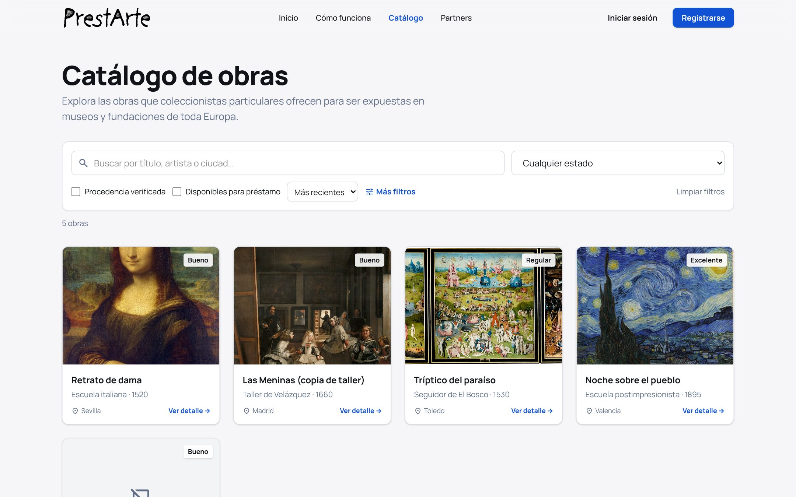
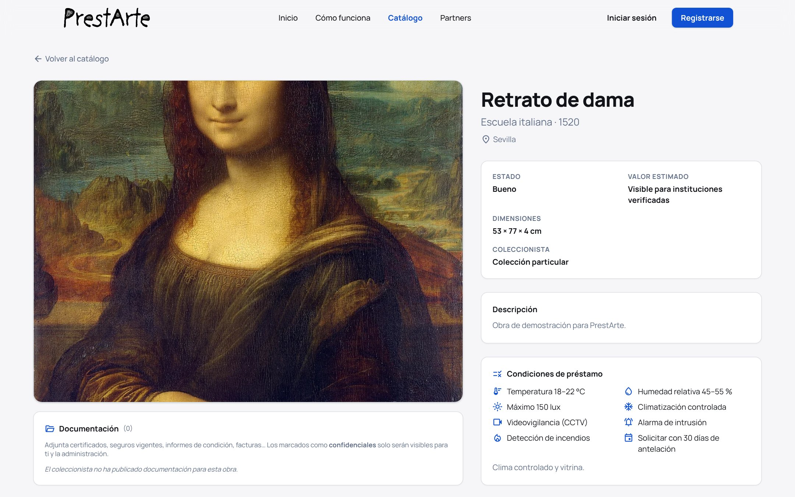
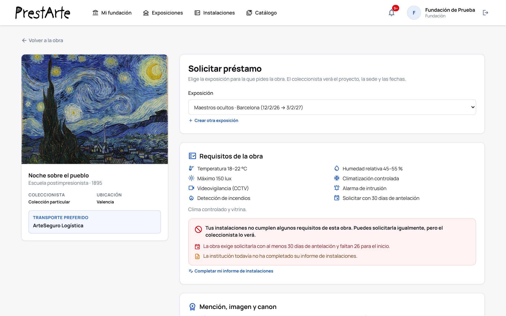
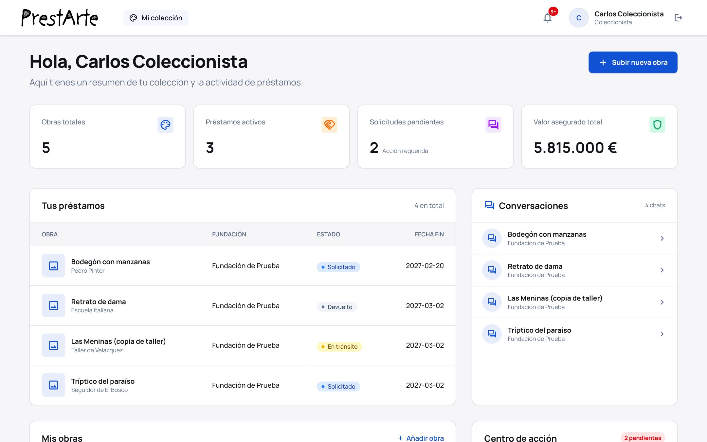
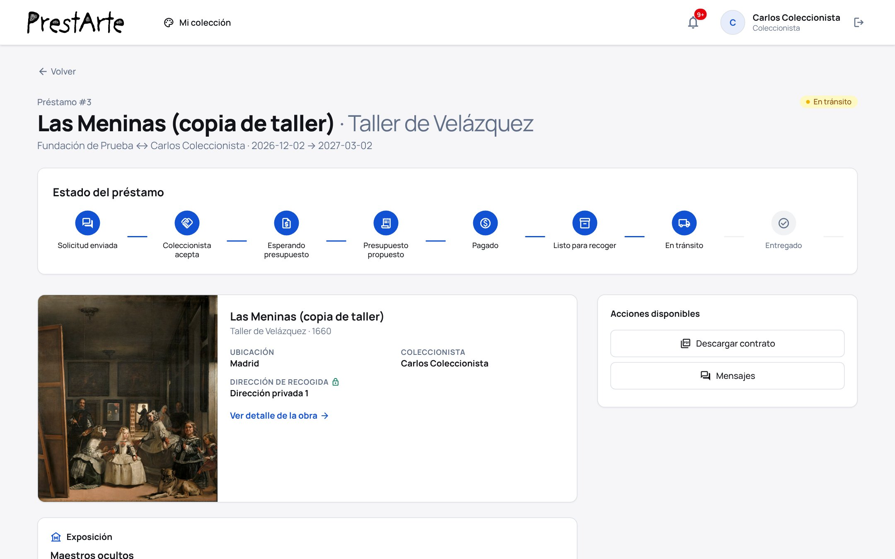
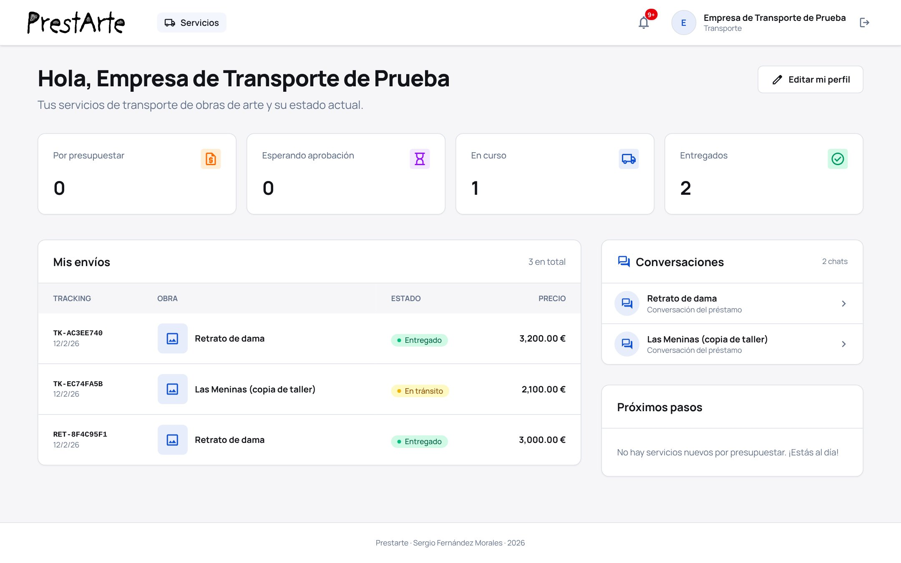

Coleccionistas, instituciones y transportistas especializados gestionan cada préstamo en un solo lugar: solicitud, seguro, permisos, transporte, exposición y devolución.
Muchas obras de colecciones privadas pasan años guardadas mientras museos y fundaciones buscan piezas para sus exposiciones. Hoy un préstamo así se organiza con correos, llamadas y hojas de cálculo. PrestArte convierte ese proceso en un flujo digital, verificado y trazable.
Una aplicación web (Angular + Spring Boot + MySQL) que cubre el ciclo completo de un préstamo de obra de arte: catálogo, solicitud vinculada a una exposición, aceptación, presupuesto de transporte, seguro «clavo a clavo», permiso de exportación, recogida con informe de estado, exposición, ampliaciones, devolución y valoraciones.
Coleccionistas privados que quieren dar visibilidad y valor a sus obras sin perder el control; museos y fundaciones que buscan piezas fuera de los circuitos habituales; y transportistas de arte que quieren recibir encargos ya cualificados.
El código fuente completo, la marca PrestArte, los diseños y la documentación, con un periodo de transición acordado. Ver la página «La operación».
Los encargos llegan por correo y sin datos completos. Presupuestar, coordinar la recogida y documentar el estado de la obra en cada hito exige mucho trabajo manual.
Las exposiciones temporales dependen de los préstamos, y una parte importante del patrimonio está en manos privadas. Las herramientas habituales de gestión de colecciones trabajan dentro de cada institución. PrestArte se plantea como el punto de encuentro entre las tres partes del préstamo, con el cumplimiento normativo incluido en el propio flujo.
Fuentes: Art Basel y UBS, The Art Market (ediciones 2025 y 2026); Ministerio de Cultura, Estadística de Museos y Colecciones Museográficas. Las cifras de España proceden de la última edición nacional publicada con totales; conviene actualizarlas con la edición más reciente antes de una presentación formal.
Nadie opera en PrestArte sin que la administración haya revisado antes su documentación (DNI, NIE o CIF y un documento acreditativo). Cada perfil tiene su panel y sus acciones, y la plataforma orquesta el resto.
| Perfil | Qué hace en PrestArte |
|---|---|
| Coleccionista | Publica sus obras con fotos, medidas, estado, valor, requisitos de conservación y condiciones (mención en cartela, usos de imagen, canon). Decide a quién presta, elige transportista y aprueba seguro y embalaje. |
| Museo / fundación | Crea sus exposiciones, consulta el catálogo con filtros y calendario de disponibilidad, ve el coste y la huella de carbono estimados antes de pedir, aprueba presupuestos y sigue el envío. |
| Transportista | Tiene un perfil público con zonas de cobertura y tarifas, recibe encargos, cotiza ida y vuelta y registra recogida, tránsito y entrega con informe de estado y fotos. |
| Administración | Verifica cuentas (KYB), revisa la procedencia de las obras contra bases de obras robadas y supervisa préstamos y conversaciones. |
Cada préstamo sigue una máquina de estados estricta: no se puede saltar un paso, y cada acción solo la puede hacer la parte a la que le toca. Todo queda en un historial con autor y fecha, y la obra no puede salir sin el seguro aprobado y, si procede, el permiso de exportación.
Certificado de préstamo y cobertura con partes, obra, valor asegurado, exposición, periodo y condiciones del prestador.
Para el coleccionista, cuando la obra llega a la sala. Suma al historial público de exposiciones de la obra.
En la aplicación y por email: solicitudes sin responder, fin del préstamo, vencimiento del seguro o del permiso.

Catálogo público con búsqueda, filtros (procedencia verificada, disponibilidad entre fechas, estado) y orden.

Ficha de la obra: el coleccionista aparece como «Colección particular» y el valor solo lo ven las instituciones verificadas.

Solicitud: la plataforma cruza los requisitos de la obra con las instalaciones del museo y avisa de cada incumplimiento.
Capturas tomadas de la aplicación en funcionamiento, con datos de demostración. Las imágenes de las obras son reproducciones de dominio público.

Panel del coleccionista: obras, préstamos activos, solicitudes pendientes, valor asegurado y conversaciones.

Expediente del préstamo con su línea de estados, la dirección de recogida protegida y el contrato descargable.

Panel del transportista: envíos con número de seguimiento, estado y precio de cada trayecto.
Un marketplace genérico se construye en semanas. Lo valioso de PrestArte es el conocimiento del préstamo de arte que ya está convertido en reglas de negocio.
PrestArte aún no factura y no tiene pasarela de pago. Las siguientes vías son propuestas que la arquitectura actual admite sin rediseño; el comprador elegirá la combinación según su posición en el sector.
| Vía | Cómo funcionaría | Quién paga |
|---|---|---|
| Comisión por préstamo | Porcentaje o tarifa fija sobre cada préstamo cerrado (por ejemplo, sobre el presupuesto de transporte aprobado). El paso «Pagado» ya existe en el flujo. | Institución |
| Suscripción institucional | Cuota anual para museos y fundaciones: catálogo completo, exposiciones ilimitadas, informes de instalaciones y estimaciones de coste. | Institución |
| Plan profesional para transportistas | Posicionamiento en el directorio, tarifas publicadas y recepción de encargos cualificados. | Transportista |
| Servicios de verificación | Revisión de procedencia y diligencia debida con distintivo «Procedencia verificada». | Coleccionista |
| Seguro intermediado | Acuerdo con aseguradoras de arte para ofrecer la póliza clavo a clavo dentro del flujo. Requiere un socio con licencia de mediación. | Institución / aseguradora |
| Marca blanca | Instancia propia para una red de museos, un grupo de fundaciones o un transportista que quiera digitalizar su servicio. | Organización cliente |
Digitaliza su servicio, capta encargos y se diferencia con trazabilidad y cumplimiento normativo.
Canal directo para colocar pólizas clavo a clavo en el momento exacto en que se necesitan.
Herramienta propia para gestionar sus préstamos y acceder a colecciones privadas.
Un módulo de préstamos maduro para añadir a su catálogo de productos o para lanzar como vertical.
| Capa | Tecnología |
|---|---|
| Frontend | Angular 21 (standalone, signals, rutas diferidas) y Tailwind CSS 4 |
| Backend | Java 21, Spring Boot 4, Spring Security, Spring Data JPA |
| Base de datos | MySQL 8 |
| Seguridad | JWT sin sesión, BCrypt, límite de intentos, permisos por recurso |
| Documentos | OpenPDF (contratos y certificados), Spring Mail (SMTP) |
| Licencias | Todo el stack es software libre, sin coste de licencias |
El detalle (arquitectura, modelo de datos, API, seguridad y deuda técnica) está en la Ficha técnica que acompaña a este dosier.
El producto es funcional. Para abrirlo al público hacen falta trabajos de puesta en producción, no de desarrollo de funcionalidades nuevas.
| Riesgo | Mitigación |
|---|---|
| Sin usuarios ni ingresos todavía | El valor está en el producto y en el conocimiento del sector incorporado. Encaja mejor con un comprador que ya tenga acceso a coleccionistas, museos o transportistas. |
| Efecto red de un marketplace | Arrancar desde un actor ancla (un transportista, una aseguradora o una red de museos) que aporte el primer lado del mercado. |
| Cobertura de tests limitada | Lógica crítica aislada en máquinas de estados y servicios, fácil de cubrir; prueba de extremo a extremo ya superada. |
| Origen académico del proyecto | Nació como Trabajo de Fin de Grado y ha evolucionado después. La titularidad del código se acreditará en la documentación de la operación. |
Además de la compra total, se pueden valorar otras fórmulas:
Sergio Fernández Morales · [email] · [teléfono]
Disponible para una demostración en directo del producto.
Este documento es informativo y no constituye una oferta vinculante. Las vías de ingresos y las cifras de mercado son orientativas. Las condiciones de la operación se fijarán en el contrato.